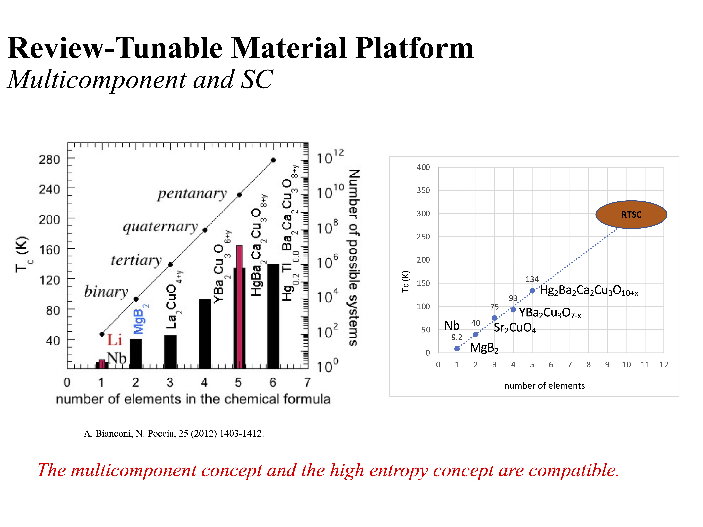
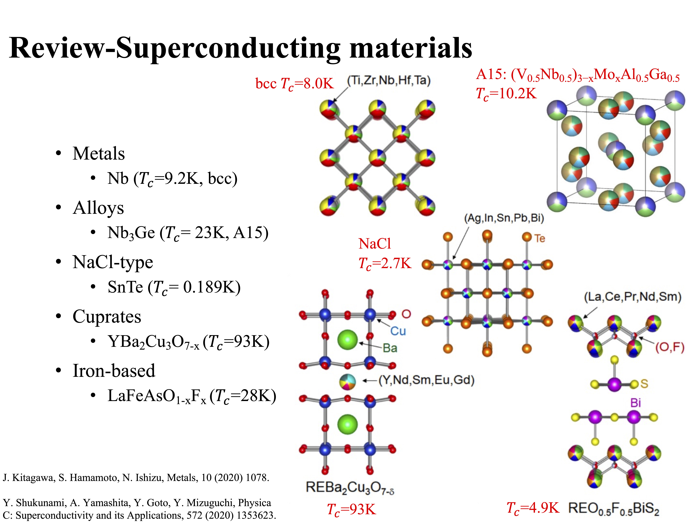
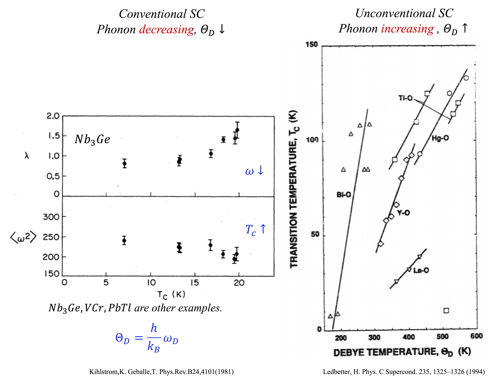
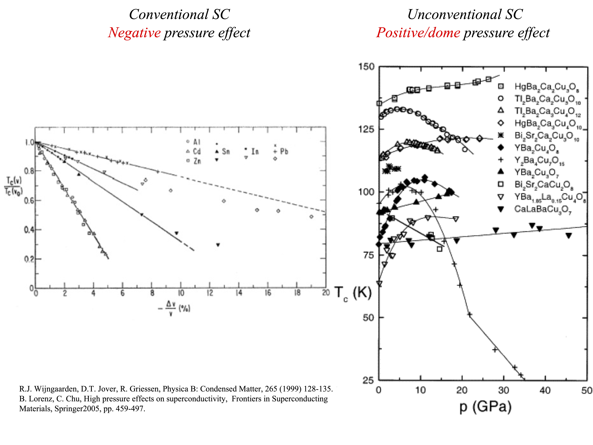
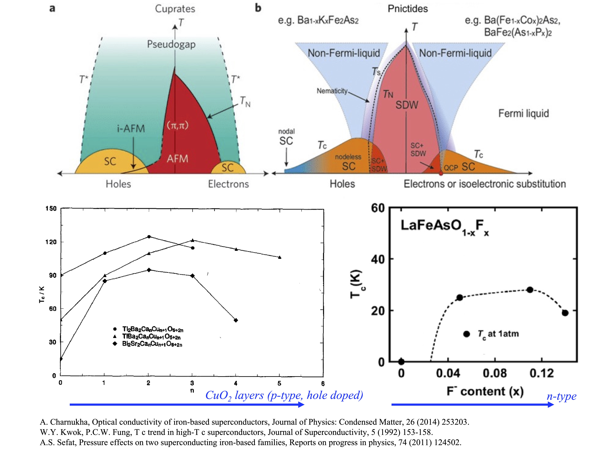
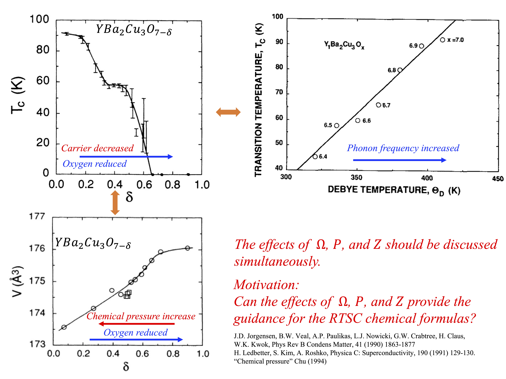
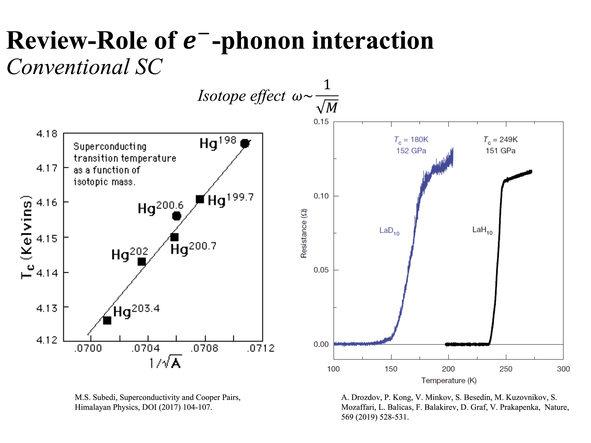
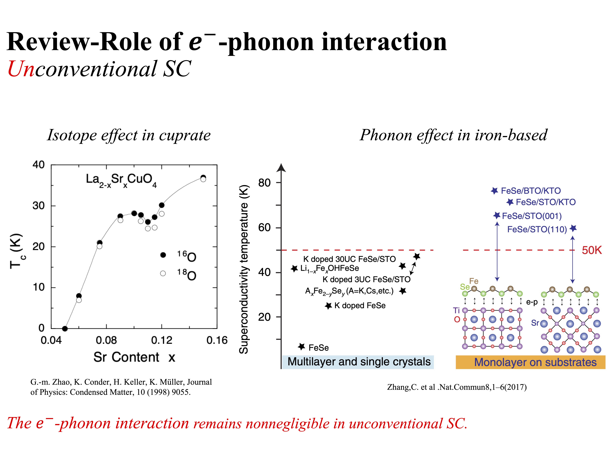
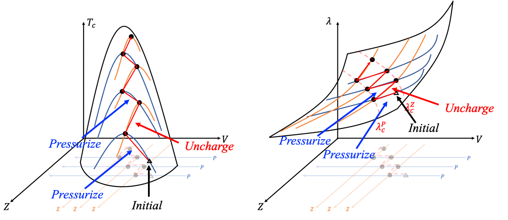

超導量子電腦-硬體技術與廠商指引(2025)
Introduction
DOI:10.1038/s41598-023-33809-5
My doctoral research focused on how to enhance superconductivity at ambient pressure through materials design. Observing the critical temperature of superconductors, one finds that it increases with the diversity of compound compositions. Extrapolating from this trend, it is anticipated that oxides containing 12 or more elements could achieve room-temperature superconductivity.

▲Extrapolating the trend, it is anticipated that oxides containing 12 or more elements could achieve room-temperature superconductivity. (Click to enlarge)
The multicomponent concept are similar with high entropy materials. The following picture illustrates the traditional superconducting materials and the high entropy partners. If we select 12 elements from a commonly used set of 80 elements, there would be at least \(C_{12}^{80}≅10^{14}\) possible combinations! It is necessary to link the relation between chemical compounds and SC theories to narrow down the possible choices.

▲This picture illustrates the traditional superconducting materials and the high entropy partners. (Click to enlarge)
The effect of phonon, pressure, and carrier number on \(T_c\)
Notably, increasing the superconducting critical temperature \(T_c\) remains the principal problem of condensed matter physics since the discovery of superconductivity. Specifically, varying the phonon spectrum, tuning the carrier number, and increasing the pressure are three important experimental approaches to enhance \(T_c\) and consequently, speculate possible theories of superconductivity. However, the effects of altering these parameters on \(T_c\) are quite contrasting between weak coupling (low \(T_c\)) and strong coupling (high \(T_c\)) superconductivity.
The phonon effects \( \Omega \)
In metallic superconductors and nickel-based superconductors, which correspond to the case of weak coupling, the critical temperature \(T_c\) can be increased via phonon softening. In contrast, in cuprate systems, which correspond to the case of strong coupling, \(T_c\) can be increased via phonon stiffening.

▲(Left) The negative phonon effect in \(Nb_3 Ge \). (Right) The Positive phonon effect in cuprates. (Click to enlarge)
The pressure effects \( P \)
The effect of pressure on \(T_c\) is negative in most metallic superconductors. On the other hand, positive effects or a dome-like delineation appear in cuprate systems, iron-based, and hydrogen-rich superconductors.

▲(Left) The negative pressure effect in metallic SC. (Right) The Positive or dome-like pressure effect in cuprates. (Click to enlarge)
The carrier effects \( Z \)
In the phase diagrams that illustrate the variation of \(T_c\) with respect to the carrier number, the doom-like delineation may be observed in metallic, cuprates, and iron-based superconductors. Specifically, the underdoped region is strongly coupled with a positive carrier number effect and becomes weakly coupled in the overdoped region with a negative carrier number effect. Besides, another approach to increase the carrier number is to gate thin film materials, which also demonstrates the dome-like effect.

▲The dome-like carrier effect. (Click to enlarge)
Cross effects between \( \Omega \), \( P \), and \( Z \)
Previous three phenomena have a common dome-like delineation – the positive tendency appears in strong coupling superconductivity, and becomes negative in weak coupling superconductivity. Three effects often couple and contribute to the cross effect! The cross effect in \(YBa_2 Cu_3 O_{7-\delta} \) demonstrated the complex behavior in SC. The carrier number \( Z \) can be tune by changing the \(O\) content. The change of carrier number causing phonon frequency \( \Omega = {k_B \over h} \Theta_D\) increased and lattice shrinkage (chemical pressure \( P \) increased). The effects of \( \Omega \), \( P \), and \( Z \) should be discussed simultaneously.

▲The cross effect in \(YBa_2 Cu_3 O_{7-\delta} \). (Click to enlarge)
Physical modeling
The role of electron-phonon coupling
The \(T_c\) relation that derives from Cooper instability is a general property of superconductivity. Specifically, this relation may be written in the form
$$T_c \sim W e^{- {1 \over \lambda}} $$
, where \(W\) is the bandwidth of superconducting electrons, and \(\lambda\) is the coupling constant of the pairing. Conventional superconductors, including metallic, \(MgB_2\), and hydrogen-rich compounds, are adequately explained by phonon-mediated pairing. This theory is famous BCS theory.

▲The isotope effect is the key experiment that demonstrate the electron-phonon coupling in SC. (Click to enlarge)
Meanwhile, unconventional superconductors, such as cuprates and iron-based superconductors are explained by Hubbard-type theories. Moreover, although the strong repulsion between electrons plays a major role in the Hubbard model, the electron-phonon interaction remains non-negligible and consequently, contributes to the unconventional superconductivity. For this reason, in this study, we discuss the effects of varying the phonon spectrum, the carrier number, and the pressure on phonon-mediated pairing.

▲The isotope effect and phonon effect still un-negligible in unconventional SC (Click to enlarge)
Linked relation between materials and theories
To discover new superconducting formulations, it is essential to connect superconducting theories with material parameters. In superconducting theory, the mainstream viewpoint posits that the interaction between electrons and phonons induces the superconducting state, with the critical temperature\(T_c\) determined by the Debye temperature \( \Theta_D \) and the coupling constant \( \lambda \). However, predicting superconductivity often requires complex theoretical computations. These involve first-principles calculations to infer physical properties under specific elements and structures, such as phonon spectra and spin occupation, followed by applying these calculated parameters to superconducting theory to predict potential\(T_c\). This process is inconvenient for large-scale experimentation with new formulations aimed at identifying superconductors.
An alternative approach is to use parameters measurable in experiments, such as phonon frequency \(\Omega\), valence \( Z \) of the element, lattice constant\( a \) or pressure \(P\) —most of which can be estimated based on elemental properties. If we can express the \(T_c\) and the coupling constant \( \lambda \) as functions of \(\Omega\), valence \( Z \), and pressure \(P\), namely:
$$T_c = T_c \left(\Omega, Z, P \right)$$
$$\lambda = \lambda \left(\Omega, Z, P \right)$$
The increment:
$$dT_c = \frac{\partial T_c}{\partial \Omega} d\Omega + \frac{\partial T_c}{\partial Z} dZ + \frac{\partial T_c}{\partial P} dP$$
the signs of \( dT_c\) can provide insights into how adjusting each parameter would affect the critical temperature when selecting materials.
Quantum Hamiltonian of Superconductivity
I extended the BCS-McMillan theory to unify effects of the phonon frequency \(\Omega\), the carrier number \(𝑍\), and the pressure \(𝑃\) on superconductivity.The quantum Hamiltonian of superconductivity is:
$$\hat{H} \left| \Psi \right> =\left[ \sum\limits_{k\sigma} \xi_k \hat{c}_{k\sigma}^\dagger \hat{c}_{k\sigma} + \frac{1}{N}\sum\limits_{kk^\prime} \frac{g_{eff}}{M\Omega^2} \hat{c}_{k\uparrow}^\dagger \hat{c}_{k\downarrow}^\dagger \hat{c}_{-k^\prime \downarrow} \hat{c}_{k^\prime \uparrow} \right] \left| \Psi \right>$$
I derived the explicit form of coupling constant \(\lambda\) and \(𝑇_𝑐\) are
$$\lambda = { C \sqrt[3]{Zn_{ion}}\over M\Omega ^2} $$
and
$$T_c \sim \Omega\cdot exp\left(-{1 \over \lambda}\right) = \Omega\cdot exp\left[-{M\Omega ^2 \over C \sqrt[3]{Zn_{ion}}}\right]$$
, where \(C\) is a constant, \(M\) is the ion mass, \(Z\) is the valence number, and \(n_{ion}\) is the ion number density.
Critical temperature \(T_c\) as a function of \( \Omega \)
The derivative of \(𝑇_𝑐\) with respect to \(\Omega\) is $${dT_c \over d\Omega}\sim {T_c \over \Omega}\cdot \left[1-{2\over \lambda}\right]$$ .The derivative \(dT_c\over d\Omega\) is equal to 0 when \(\lambda\) is equal to 2. Define the critical coupling constant corresponding to the phonon frequency \(\lambda_c^\Omega=2\).
Critical temperature \(T_c\) as a function of \( Z \)
To investigate the dependency of \(\lambda\) and \(T_c\) on carrier number \(Z\), \(T_c\) equation and \(\lambda\) equation can be rewritten as a function of the carrier number \(Z\). Here, the characteristic phonon frequency \(\Omega\) uses the jellium phonon frequency \(\Omega=\sqrt{(Z^2 e^2 n_{ion}/\varepsilon_0 M}\) , where \(\varepsilon_0\) is the permittivity. The explicit form of \lambda and \(T_c\) as a function of \(Z\) are $$\lambda(Z)=\frac{C\varepsilon_0}{e^2 n_{ion}^{\frac{2}{3}}} Z^{-\frac{5}{3}}$$ and $$T_c (Z)\sim \left(\frac{Z^2 e^2 n_{ion}}{{\varepsilon_0 M}}\right)^{\frac{1}{2}} exp\left(-\frac{C\varepsilon_0}{e^2 n_{ion}^{2/3}} Z^{-\frac{5}{3}} \right) $$ . The derivative of equation (5) and equation (6) with respect to \(Z\) are $$\frac{d\lambda}{dZ}=-\frac{5}{3}\frac{\lambda}{Z} $$ and $$\frac{dT_c}{dZ}=\frac{T_c}{Z} \left[1-\frac{\frac{5}{3}}{\lambda}\right] $$ . The derivative \(\frac{dT_c}{dZ}\) is equal to \(0\) when \(\lambda\) is equal to \(\frac{5}{3}\), denoted as \(\lambda_c^Z\).
Critical temperature \(T_c\) as a function of \( P \)
Third, to investigate the dependency of \(T_c\) on pressure \(P\), the compressibility \(\beta=-\frac{1}{V}*\frac{dV}{dP} \) can be adopted to relate the pressure \(P\) and the volume \(V\). Using \(n_{ion}=N_{ion}/V\), where \(N_{ion}\) is the number of ions; equation (5) and equation (6) can thus be rewritten into a function of \(V\): $$\lambda(V)=\frac{C\varepsilon_0}{e^2 Z^{\frac{5}{3}} N_{ion}^{\frac{2}{3}} } V^{\frac{2}{3}}$$ and $$T_c (V)\sim \left(\frac{Z^2 e^2 n_{ion}}{\varepsilon_0 MV}\right)^{\frac{1}{2}} exp\left(-\frac{e^2 Z^{\frac{5}{3}} N_{ion}^{\frac{2}{3}}}{C\varepsilon_0} V^{-\frac{2}{3}} \right) $$ . The derivative of equation (9) and equation (10) with respect to the pressure P are: $$\frac{d\lambda}{dP}=\frac{dV}{dP}*\frac{d\lambda}{dV}=-\beta V*\frac{2}{3} \frac{\lambda}{V} $$ and $$\frac{dT_c}{dP}=\frac{dV}{dP}*\frac{dT_c}{dV}=\beta V*\frac{1}{2} \frac{T_c}{V} \left[1-\frac{\left(\frac{4}{3}\right)}{\lambda} \right] $$ . The critical coupling constant corresponding to the pressure is \(\lambda_c^P=\frac{4}{3}\).

Zigzag enhancement
These critical coupling constants are consistent with experimental observations and quantitatively classify superconductivity into three categories: weak (\(\lambda_c < \lambda_c^P\)) , intermediate (\(\lambda_c^P < \lambda_c^\Omega\)) , and strong coupling (\(\lambda_c > \lambda_c^\Omega\)) . Each category corresponds to different enhancement strategies. More precisely, the enhancement strategies for weak and strong coupling regions are opposite, but both inevitably bring superconductivity into the intermediate coupling region. For superconductors in the intermediate coupling region, general zigzag strategies further enhance the superconductivity. In particular, take that \(\lambda\) belongs in the interval \(\lambda_c^P<\lambda<\lambda_c^Z\) for the following discussion without loss of generality. In this interval, superconductivity can be enhanced by increasing \(P\) or decreasing \(Z\). First, let the superconductivity be optimized by tuning \(Z\), such that \(\lambda\) is equal to \(\lambda_c^Z\), denoted as \(\lambda_1\). Second, since \(\lambda_1\) is larger than \(\lambda_c^P\), we can increase \(P\) to increase \(T_c\). The second step causes \(\lambda\) to decrease and \(T_c\) is optimized when \(\lambda=\lambda_c^P\), denoted as \(\lambda_2\). Third, now \(\lambda_2\) is smaller than \(\lambda_c^Z\), \(T_c\) can be further increased by decreasing \(Z\). The third step increases \(\lambda\) and \(T_c\) is optimized when \(\lambda=\lambda_c^Z\), denoted as \(\lambda_3\). Repeat step 2 and step 3 by increasing \(P\) and decreasing \(Z\) alternately; \(T_c\) can be enhanced like a zigzag mountain climbing.

▲
 王培儒
王培儒{kind=link}
{kind=link}
{kind=link}
{kind=link}
{kind=link}
{kind=link}
{kind=link}
{kind=link}
{kind=link}
{kind=link}
{kind=link}
{kind=link}
{kind=link}
{kind=link}
{kind=link}
{kind=link}
{kind=link}
{kind=link}